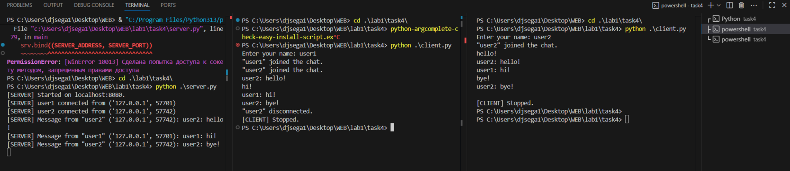

Задание 4 (Многопользовательский TCP+threading чат)
Сервер:
import socket
import threading
SERVER_ADDRESS = "localhost"
SERVER_PORT = 8080
BUF_SIZE = 4096
MAX_CONN = 10
mutex = threading.Lock()
clients: dict[socket.socket, str] = {}
def broadcast(message: bytes):
with mutex:
for sock in list(clients.keys()):
try:
sock.sendall(message)
except:
disconnect(sock)
def disconnect(sock: socket.socket):
with mutex:
name = clients.pop(sock, None)
try:
sock.close()
except:
pass
if name:
broadcast(f'"{name}" disconnected.'.encode())
def connect(sock: socket.socket, addr):
try:
name_bytes = receive_message(sock)
if not name_bytes:
disconnect(sock)
return
username = name_bytes.decode().strip()
if not username:
username = f'{addr[0]}:{addr[1]}'
with mutex:
clients[sock] = username
print(f'[SERVER] {username} connected from {addr}')
broadcast(f'"{username}" joined the chat.\r\n'.encode())
while True:
data = receive_message(sock)
if not data:
break
text = data.decode(errors='replace').rstrip('\n')
message = f'{username}: {text}\n'
print(f'[SERVER] Message from "{username}" {addr}: {message.strip()}')
broadcast(message.encode())
except Exception as e:
print(f'[SERVER] Exception: {e}')
finally:
disconnect(sock)
def receive_message(sock):
buf = bytearray()
try:
while True:
chunk = sock.recv(BUF_SIZE)
if not chunk:
return b''
buf.extend(chunk)
if b'\n' in chunk:
break
except:
return b''
idx = buf.find(b'\n') + 1
return bytes(buf[:idx])
def main():
srv = socket.socket(socket.AF_INET, socket.SOCK_STREAM)
srv.setsockopt(socket.SOL_SOCKET, socket.SO_REUSEADDR, 1)
srv.bind((SERVER_ADDRESS, SERVER_PORT))
srv.listen(MAX_CONN)
print(f'[SERVER] Started on {SERVER_ADDRESS}:{SERVER_PORT}.')
try:
while True:
sock, addr = srv.accept()
thread = threading.Thread(target=connect, args=(sock, addr), daemon=True)
thread.start()
except KeyboardInterrupt:
print('[SERVER] Stopping...')
finally:
with mutex:
for sock in list(clients.keys()):
try:
sock.shutdown(socket.SHUT_RDWR)
sock.close()
except:
pass
srv.close()
print('[SERVER] Stopped.')
if __name__ == '__main__':
main()
Запуск
cd task4
python server.py
Клиент (один терминал - один клиент):
import socket
import threading
import sys
SERVER_ADDRESS = "localhost"
SERVER_PORT = 8080
BUF_SIZE = 4096
def listen_for_messages(sock: socket.socket):
while True:
try:
data = sock.recv(BUF_SIZE)
if not data:
print("[CLIENT] Server connection closed.")
break
sys.stdout.write(data.decode())
sys.stdout.flush()
except:
break
def main():
sock = socket.socket(socket.AF_INET, socket.SOCK_STREAM)
sock.connect((SERVER_ADDRESS, SERVER_PORT))
name = input("Enter your name: ")
if not name:
name = "userAnon"
sock.sendall((name + "\n").encode("utf-8"))
threading.Thread(target=listen_for_messages, args=(sock,), daemon=True).start()
try:
while True:
line = input()
sock.sendall((line + "\n").encode())
except (KeyboardInterrupt, EOFError):
print("\n[CLIENT] Stopped.")
finally:
sock.close()
if __name__ == "__main__":
main()
Запуск:
cd task4
python client.py
Пример работы:
